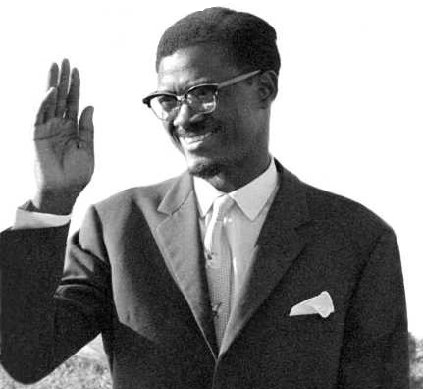
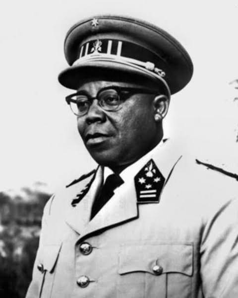
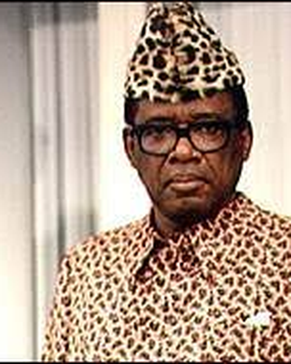
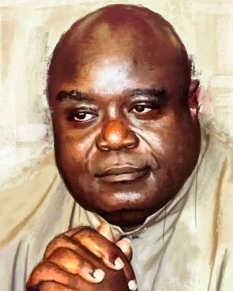
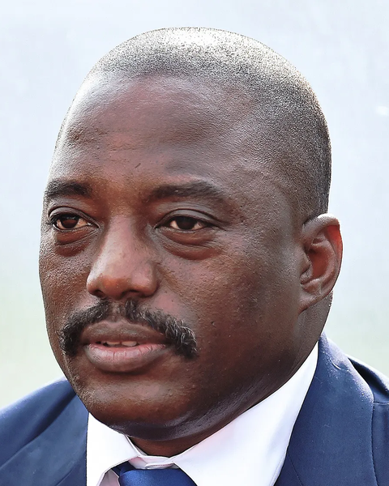
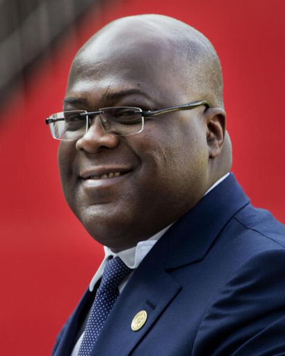

L'histoire du pays
D'où nous venons, pour mieux construire où nous allons.
1960 : l'année de l'indépendance
Le 30 juin 1960, le Congo accède à l'indépendance. Cette année-là, de nombreux pays africains se libèrent de la colonisation : c'est l'« année de l'Afrique ».
Patrice Emery Lumumba devient le premier Premier ministre du Congo indépendant. Figure de l'indépendance africaine, il reste un symbole de la dignité et de la souveraineté des peuples. Il est assassiné le 17 janvier 1961.
Aujourd'hui, les 21 défis veulent achever ce combat : un Congo réellement maître de son destin, uni et prospère.

Ceux qui ont dirigé la République
Cinq présidents depuis l'indépendance.

Joseph Kasa-Vubu
1960 – 1965
Mobutu Sese Seko
1965 – 1997
Laurent-Désiré Kabila
1997 – 2001
Joseph Kabila
2001 – 2019
Félix Tshisekedi
depuis 2019La nouvelle génération
Après les cinq présidents, une génération se lève pour prendre le relais.
Patrick Lubanda Mpibwe
Le porte-étendard d'une nouvelle génération pour un Congo futur et prospère.
« L'avenir de demain, c'est la jeunesse avant tout, et la jeunesse, c'est maintenant ! »